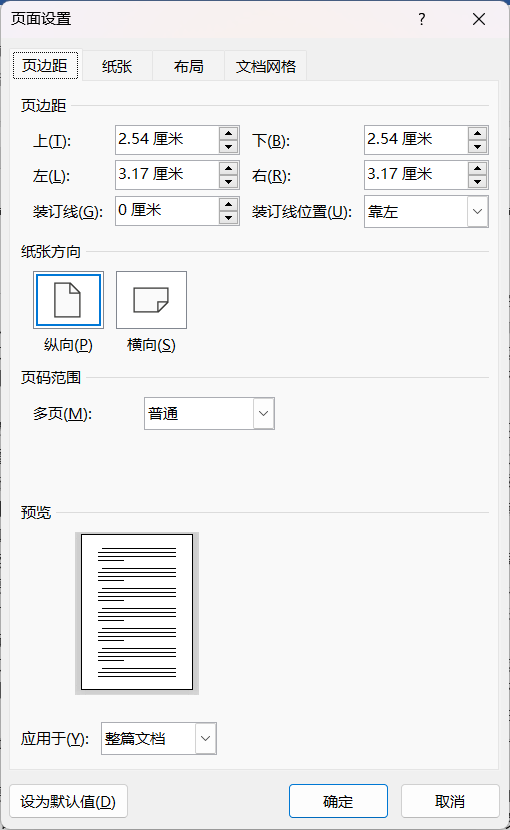
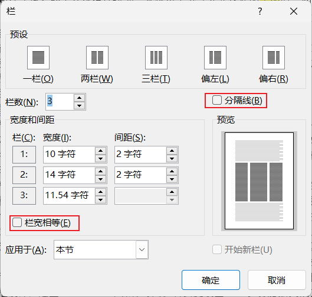
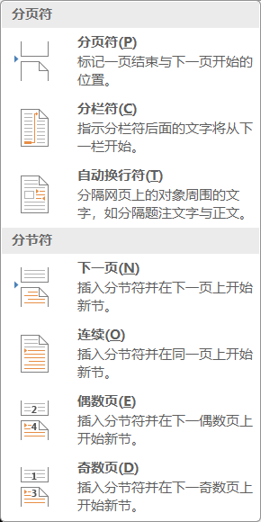
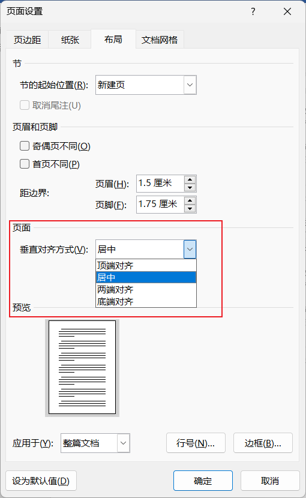

布局
Layout
- 内容 Contents
- 页面布局
- 分页符
- 分节符
- 方法 Methods
- 示范 + 实操
页面设置
- 文字方向
- 页边距
- 纸张方向
- . 纵向、横向
- . 默认是当前节的页面方向，要实现混合排版，必须将页面放在不同的节中
- 纸张大小
-
 页面设置 - 栏
- . "更多栏"对话框，功能更加丰富
-
 文档属性 - 分隔符
- . 分页符：在同一节内，单纯的新起一页。再不要不断回车换行撑满到下一页了
- . 分节符：默认都是在一节内操作，也可以插入分节符，开始新的一节；每个节都可以单独设置它的属性，如论文排版，要求彼此之间单独设置页眉、页脚、页码，就必须将文档分为若干节
-
 分隔符：分页符和分节符
布局
- . 内容在页面上的布局方式；默认是顶端对齐
-
 布局 - 打印水平垂直居中的姓名牌
- 垂直等分排列页面段落